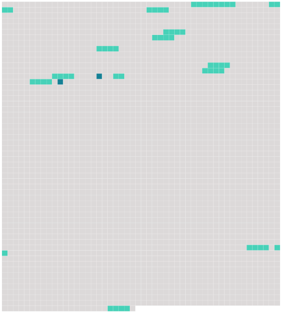

Longueur nb maillons : 16 mentions |
  |
Ce conseil sera convoqué soit sur la réquisition et à la diligence des parens du mineur, de ses créanciers ou d'autres parties intéressées, soit même d'office et à la poursuite [du juge de paix du domicile du mineur]
Toute personne pourra dénoncer à [ce juge de paix] le fait qui donnera lieu à la nomination d'un tuteur. [1 phrases]
Le conseil de famille sera composé, non compris [le juge de paix] , de six parens ou alliés, pris tant dans la commune où la tutelle sera ouverte que dans la distance de deux myriamètres, moitié du côté paternel, moitié du côté maternel, et en suivant l'ordre de proximité dans chaque ligne. [6 phrases]
Lorsque les parens ou alliés de l'une ou de l'autre ligne se trouveront en nombre insuffisant sur les lieux, ou dans la distance désignée par l'article 407, [le juge de paix] appellera, soit des parens ou alliés domiciliés à de plus grandes distances, soit, dans la commune même, des citoyens connus pour avoir eu des relations habituelles d'amitié avec le père ou la mère du mineur. [1 phrases]
[Le juge de paix] pourra, lors même qu'il y aurait sur les lieux un nombre suffisant de parens ou alliés, permettre de citer, à quelque distance qu'ils soient domiciliés, des parens ou alliés plus proches en degrés ou de mêmes degrés que les parens ou alliés présens ; de manière toutefois que cela s'opère en retranchant quelques uns de ces derniers, et sans excéder le nombre réglé par les précédens articles. [1 phrases]
Le délai pour comparaître sera réglé par [le juge de paix] à jour fixe mais de manière qu'il y ait toujours, entre la citation notifiée et le jour indiqué pour la réunion du conseil, un intervalle de trois jours au moins, quand toutes les parties citées résideront dans la commune, ou dans la distance de deux myriamètres. [5 phrases]
Tout parent, allié ou ami, convoqué, et qui, sans excuse légitime, ne comparaîtra point, encourra une amende qui ne pourra excéder cinquante francs, et sera prononcée sans appel par [le juge de paix] [1 phrases]
S'il y a excuse suffisante, et qu'il convienne, soit d'attendre le membre absent, soit de le remplacer ; en ce cas ; comme en tout autre où l'intérêt du mineur semblera l'exiger, [le juge de paix] pourra ajourner l'assemblée ou la proroger. [1 phrases] Cette assemblée se tiendra de plein droit chez [le juge de paix] , à moins qu' [il] ne désigne [lui -même] un autre local. [2 phrases]
Le conseil de famille sera présidé par [le juge de paix] , [qui] y aura voix délibérative et prépondérante en cas de partage. [85 phrases]
Toutes les fois qu'il y aura lieu à une destitution de tuteur, elle sera prononcée par le conseil de famille, convoqué à la diligence du subrogé tuteur ou d'office par [le juge de paix]
[Celui -ci] ne pourra se dispenser de faire cette convocation, quand elle, sera formellement requise par un ou plusieurs parens ou alliés du mineur, au degré de cousin germain ou à des degrés plus proches. [21 phrases] Dans ce cas, ils en feront faire, à leurs frais, une estimation à juste valeur, par un expert qui sera nommé par le subrogé tuteur et prêtera serment devant [le juge de paix] |
 |
La ressource peut être téléchargée sur la page Ortolang
Si vous avez des questions ou vous voyez des erreurs, merci d'envoyer un mail à silvia.federzoni89@gmail.com
Site développé par S. Federzoni (contact)